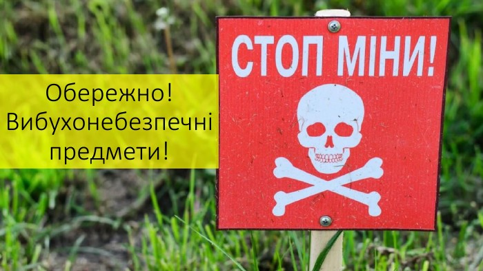

Безпечні кроки: як уникнути небезпеки від мін
На жаль, через війну в Україні існує велика загроза мін та вибухонебезпечних предметів. Діти особливо уразливі, бо можуть не розпізнати небезпеку. Важливо знати прості правила, які допоможуть зберегти життя та здоров’я.
Де можна зустріти вибухонебезпечні предмети
- У полі, лісі, на узбіччі дороги.
- На територіях, де були бойові дії.
- Біля зруйнованих будівель або покинутої техніки.
- У водоймах чи на пляжах.
Правила мінної безпеки
- Ніколи не торкайся незнайомих предметів.
- Не підходь до мін, боєприпасів чи підозрілих речей.
- Не бери в руки яскраві чи дивні предмети на землі.
- Завжди повідомляй дорослих або рятувальників (101), якщо побачив щось підозріле.
- Запам’ятай: краще обійти незнайоме місце, ніж ризикувати.
Приклади з життя
Приклад 1. Діти в селі знайшли металевий предмет і хотіли погратися. Вчасно зупинила сусідка та викликала саперів. Це врятувало життя.
Приклад 2. Хлопчик побачив снаряд у лісі, сфотографував його та розповів дорослим. Сапери знищили боєприпас у безпечних умовах.
Інтерактивне завдання: "Безпечно чи небезпечно?"
Перетягни картки у правильну колонку
Доторкнутися до незнайомого предмета в полі
Повідомити дорослих, якщо щось знайшов
Сфотографувати міну і піти далі
Обійти місце з попереджувальним знаком
Гратися з дивним металевим предметом